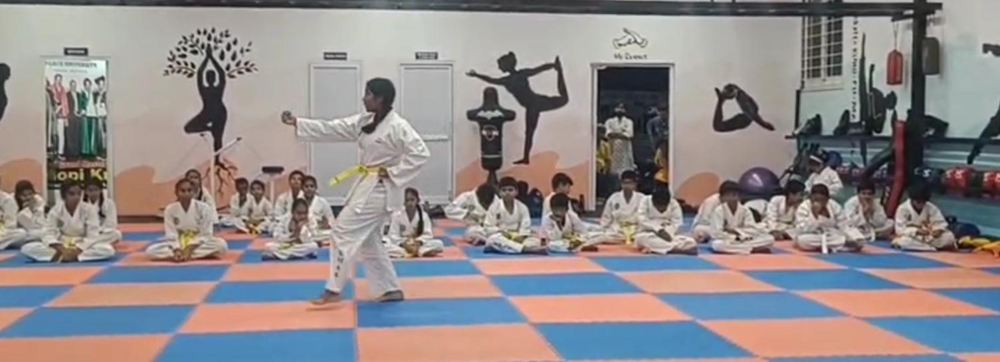
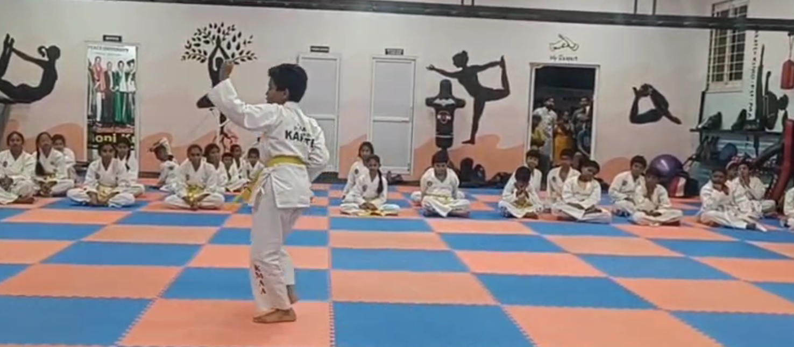
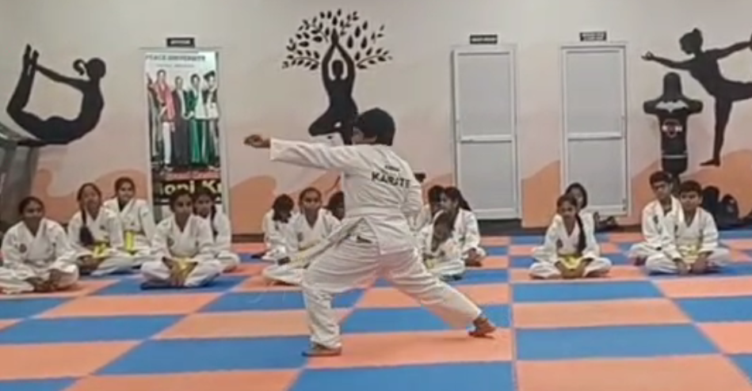
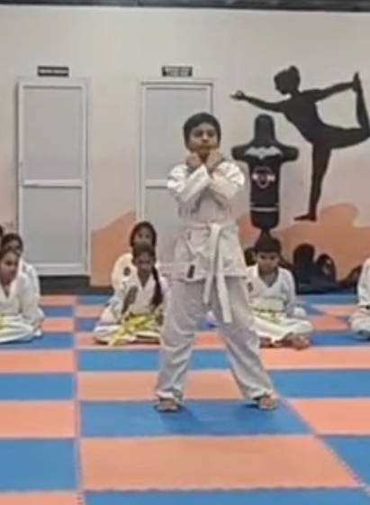
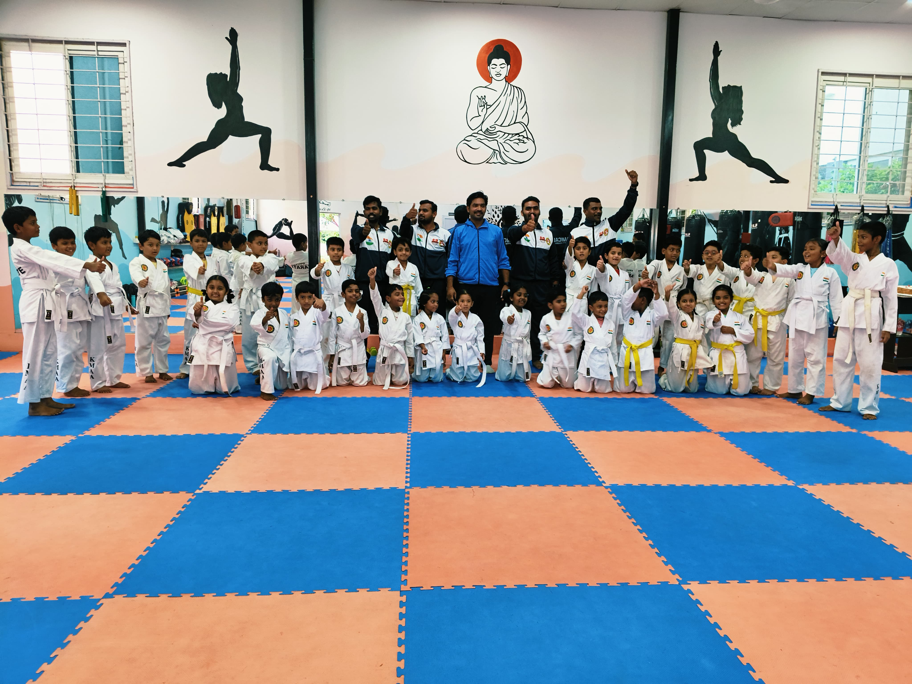
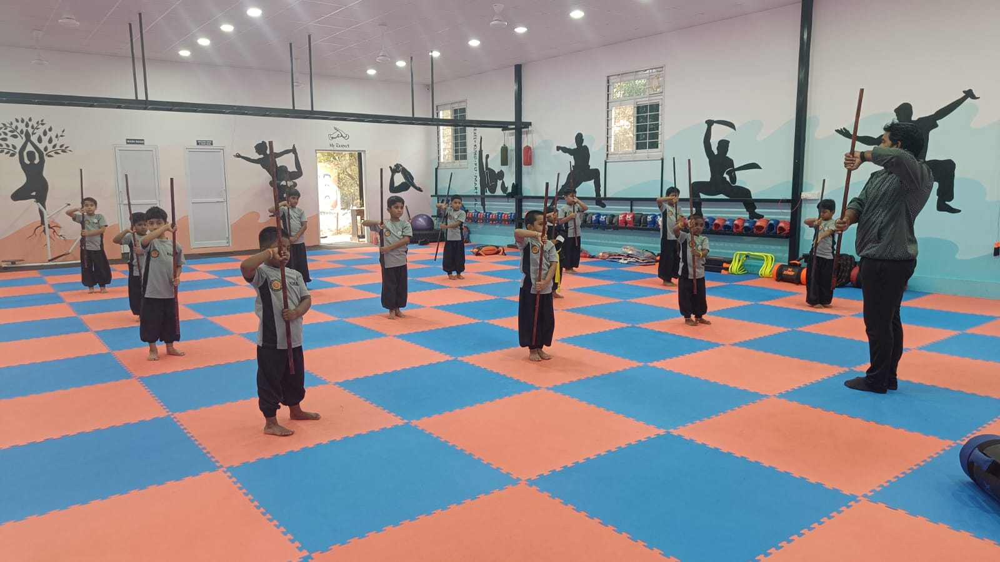
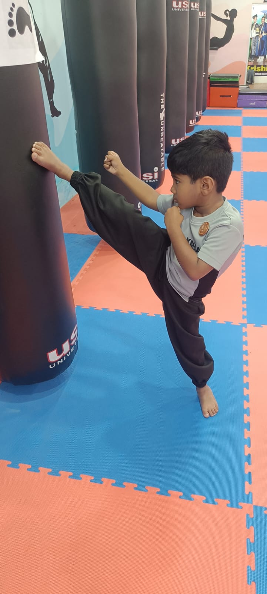

Kung Fu Martial Arts Academy – Philosophy & Code of Discipline
“At Kung Fu Martial Arts Academy, we don’t just teach martial arts like Karate and Kung Fu—
we focus on building discipline, character, respect, and life values that shape strong individuals.”
Always use your art only for self-defense.
Respect your parents, your Guru, and all elders.
Speak politely with everyone, especially children and supporting staff.
Never forget your values and culture.
Always finish what you start.
Stay positive in life and towards the people around you.
Stay strong in the face of challenges.
Be a good team member.
Make hard work, honesty, and truth your lifelong companions.
Respect your time and the time of others.
Exercise regularly to keep your body strong and healthy.
“All the above principles and thoughts are shared by Grand Master Dr. T. Gopi Krishna for students learning martial arts, guiding them to grow not only as fighters, but as disciplined and responsible individuals in life.”
— Grand Master Dr. T. Gopi Krishna
Introduction to Martial Arts
Martial arts is not just about fighting; it is about self-discipline and personal growth.
It helps build physical strength and mental toughness while teaching patience and emotional control.
Students develop confidence and leadership skills through consistent practice. Training also improves flexibility, stamina, and overall fitness.
It promotes respect for teachers and peers while enhancing focus and concentration.
Martial arts is highly beneficial for self-defense situations and helps individuals develop a strong mindset to overcome challenges.
Ultimately, it shapes individuals into responsible and confident citizens.
What We Teach
Karate
Karate is a traditional martial art that focuses on powerful strikes, blocks, punches, and kicks.
It builds discipline and strong character while helping students develop confidence and self-control.
Through regular training, students improve balance, coordination, and physical strength.
It also enhances mental focus, concentration, and overall fitness.
Karate teaches important values such as respect, humility, and perseverance.
It prepares individuals for self-defense and promotes a healthy, active lifestyle.
Kung Fu
Kung Fu is an ancient Chinese martial art with roots tracing back to the famous Shaolin Temple, known for its rich tradition and disciplined training.
It is recognized for its fluid movements, powerful techniques, and graceful forms.
Kung Fu training improves flexibility, agility, strength, and endurance, helping students achieve overall physical fitness.
Students learn unique animal-style techniques such as tiger, crane, snake, and dragon styles, which develop coordination, balance, and control.
A key aspect of Kung Fu is breathing techniques and energy flow, which promote inner peace, mental clarity, and emotional balance.
Training also sharpens reflexes, timing, and concentration.
Kung Fu emphasizes discipline, patience, and self-control. It teaches important values like respect, perseverance, and confidence.
More than just self-defense, Kung Fu is a complete art that nurtures both body and mind, promoting a balanced, healthy, and focused lifestyle.
Taekwondo
Taekwondo is a dynamic martial art known for its fast and powerful kicking techniques.
It improves speed, strength, flexibility, and overall fitness.
Training helps develop strong leg control, balance, and quick reflexes.
It also builds confidence, discipline, and mental focus while teaching respect and self-defense skills.
Recognized worldwide, Taekwondo is an official sport in the Olympic Games, making it both a competitive sport and a valuable form of personal development.
GRAND MASTER DR.T.GOPI KRISHNA
Grand Master Dr. T. Gopi Krishna is a highly respected martial arts expert with over 26 years of experience in training students. He has successfully trained thousands of students and continues to inspire them through his dedication and passion for martial arts.
He strongly focuses on discipline, character building, and personal development. He is well known for his commitment to excellence and his contributions to district, state, national, and international competitions.
Beyond martial arts, he is actively involved in social service activities, encouraging students to become responsible citizens and good human beings. He believes in shaping not only strong fighters but also individuals with values, respect, and integrity.
Under his guidance, students regularly participate and achieve success in district and state-level competitions, as well as higher-level championships. They develop strong character, confidence, fitness, and self-defense skills. His leadership has inspired many young athletes to achieve success in their martial arts journey.
He continues to promote and spread martial arts knowledge with great enthusiasm.
Positions Held:
Founder, Director & Chief Examiner – KMAA
Vice President – TASMO
General Secretary – KMASA
Former & Director - KMAA
Vice President - TASMO
General Secretary - KMASA
Gallery







Benefits of Martial Arts
Martial arts offers a wide range of physical, mental, and personal benefits.
It helps build confidence and self-esteem while improving overall physical fitness, flexibility, stamina, and coordination.
Training enhances discipline, focus, and concentration, while also supporting better mental health and emotional balance.
It develops patience, quick reflexes, and awareness.
Students learn important values such as respect, responsibility, and strong character.
Martial arts also builds leadership skills, encourages teamwork, and promotes a positive attitude.
In addition, it equips individuals with effective self-defense skills and inspires a healthy and active lifestyle.
Tournaments
Tournaments
At Kung-Fu Martial Arts Academy, we take pride in training our students to participate in state, national, and international-level competitions. Our academy regularly conducts and participates in various tournaments to provide maximum exposure and competitive experience.
Our students have achieved outstanding success by winning medals, certificates, and accolades in multiple championships. With expert coaching and continuous practice, they develop advanced techniques, mental strength, and confidence to excel at higher levels.
Competitions play a key role in shaping a student’s martial arts journey. They enhance performance, build discipline, and teach valuable life skills such as sportsmanship, focus, and perseverance.
Benefits of Participation
Builds confidence and self-discipline
Enhances technical and performance skills
Provides competitive exposure
Boosts motivation and focus
Encourages sportsmanship and respect
Opens doors to higher-level opportunities and recognition
At Kung-Fu Martial Arts Academy, we prioritize the health, safety, and well-being of all our students.
We maintain clean and well-organized training areas, and all equipment is sanitized regularly. Students are encouraged to follow proper hygiene practices at all times.
Our academy is equipped with CCTV surveillance cameras to ensure continuous safety and monitoring within the premises. All classes are conducted under proper supervision by experienced instructors.
We follow strict safety procedures after class. Students are allowed to leave the premises only with their parents or authorized guardians. If parents are delayed, children will be kept safely inside the academy and will not be sent outside alone.
We also guide students on road safety, including how to cross the road properly. Our staff ensures that children exit the premises safely.
Additionally, we educate students about personal safety. They are strictly instructed not to accept chocolates, biscuits, or anything from unknown persons. We regularly remind them to stay alert and be cautious around strangers.
First aid facilities are available, and clean drinking water is provided. We maintain strict discipline and a safe, healthy, and supportive training environment for every student.
Class Timings
Nizampet Branch
At our Nizampet branch, we offer flexible batches suitable for all age groups and skill levels.